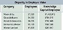

What's the Worth of an Employee?
Knowledge Capital is an attribute of organizations, not a characteristic of individuals
By Paul A. Strassmann
 Skills, schooling and the experience accumulated by an individual are not necessarily a measure of that person's worth as an employee. Let me illustrate this with the difference between a shoemaker and an employee working for a shoe manufacturer.
Skills, schooling and the experience accumulated by an individual are not necessarily a measure of that person's worth as an employee. Let me illustrate this with the difference between a shoemaker and an employee working for a shoe manufacturer.
The craftsman shoemaker must possess an enormous amount of knowledge about leather, glues, leather-working tools, stitching, design, orthopedics and customer care. Yet, such a master shoemaker is most likely to earn only a very modest living. It may take the shoemaker at least 10 years of apprenticeship and another 10 years of practice to qualify as a master, while receiving only minimum wages.
Contrast this with an employee of a men's footwear company, such as Timberland USA. With 1998 revenues of $862 million, profits of $59 million and 5,200 employees, the workforce has a knowledge capital valuation of $68,000 per person. Most of this workforce receives only a minimum of training, since each job is specialized. If you include the salaries of management, the sales force and the shoe designers, the median pay of Timberland employees will be higher than that of the few remaining master shoemakers.
The difference between the knowledge of individuals and their capitalization as members of an organization was brought home to me dramatically from my years with Xerox. As individuals, the researchers at Xerox PARC were respected as being among the most knowledgeable researchers of their time. Years later, they stimulated the creation of a number of multibillion ventures. Yet, as employees, their contributions to the knowledge capital while employed by Xerox was zero—probably negative.
Organized complexity

Knowledge has always been an essential ingredient of all human progress. I have in my collection a stone artifact from Africa estimated to be at least 400,000 years old. Our ancestors required an enormous increase in their knowledge to make an axe-like object. Ten thousand years ago, it required an accumulation of knowledge to preserve seeds for planting in an irrigated field. Five hundred years ago, the developments that lead to the invention of machinery were all based on an increased trove of accumulated knowledge.
In the past, knowledge was an add-on ingredient for organized exploitation of resources, whether it was land, labor or capital. What is different now is that knowledge—in the form of information—has ceased to be just an additive. It has become the decisive element in making the economy function. It is superiority in information management that now creates economic value-added for the overwhelming majority of U.S. businesses.
For that reason, it is not salaries and wages that determine the worth of a worker, but how much economic value-added they create as an organized body in excess of the sum of their compensation. It is not how much you pay your workforce or how many computers you give them that matters, it is how well an organization leverages the latent capabilities of its workforce that yields economic value. Knowledge Capital is a reflection of how well an organization integrates the talents of employees, the needs of customers, the skills of the suppliers and its capacity to adapt to external conditions.
The table displays a calculation of knowledge capital per employee for pharmaceutical firms. These firms are of comparable size; employ people of comparable qualifications; drawn from the same labor pool; are located in cities with comparable socio-economic structures; can show identical educational credentials; learn about progress from the same technical magazines; keep track of research findings from every source that is relevant to their expertise; attempt to satisfy the needs of a similar group of customers; are subject to almost identical regulatory requirements; have access to identical computing technologies; and operate lookalike manufacturing processes. From the standpoint of inputs, whether that involves land, labor, capital or information, these firms are—for all practical purposes—undifferentiated.
Why do their employees, in terms of knowledge capital valuations, show dramatically different valuations? What can explain the 544 percent difference between Merck & Co. and Warner-Lambert? Such a large disparity cannot be possibly explained by any other attribute that would show up on employees' resumes.
Although one can spin a large number of theories explaining why one firm delivers superior economic results than another, the simplest, and therefore most plausible, answer is that knowledge capital is the way an organization extracts wealth from its information resources.
Next month, I'll explore the ways in which information management affects the worth of the employee.
Paul A. Strassmann, formerly the Deputy Asst. Secretary of Defense and vice president of strategic planning for Xerox Corp., originated the "information productivity," "return-on-management" and "knowledge capital" trademarked concepts.